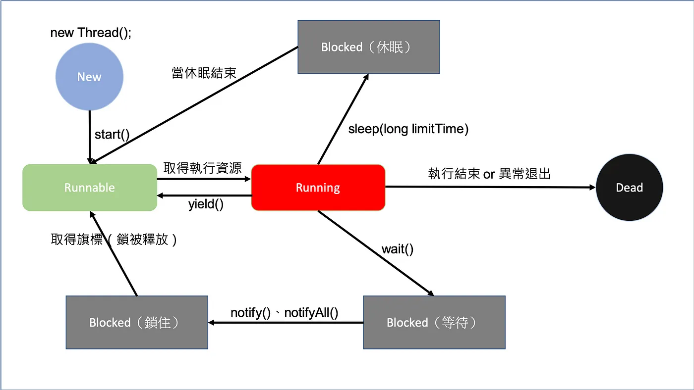
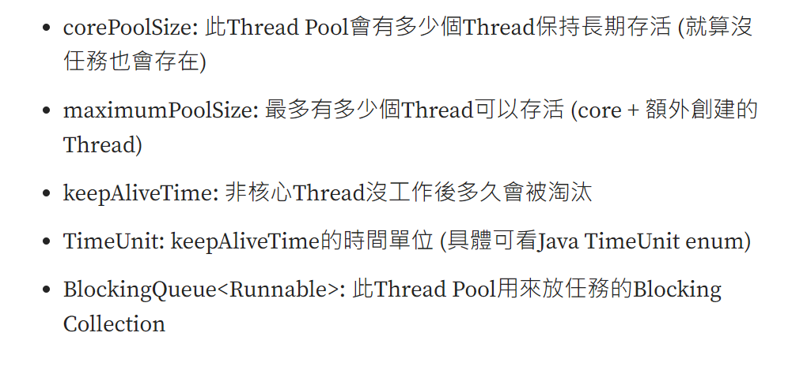

Java Thread & Thread Pool
Thread
參考資料：
1CPU與多個Process

一個應用程式或行程（Process）可以向作業系統取得多個執行緒（threads），多個執行緒可以模擬出平行處理的效果。一個具備單一（此處的CPU僅考慮單核心）的系統，事實上同一時間只能執行一件事，但如果將一個 CPU 的執行時間切割為很小的單位，將這些單位分給多個行程去使用，就可以模擬出多工（multi-task）的效果
即：1 個 Process 也可以對應到多個 Thread (執行緒) (main 方法底下，可以模擬出不同多執行緒的方式)。
如何在Java定義執行緒並啟動
用 implements Runnable 比較好，因為如果用 extends Thread 的話，會受到 Java 物件只能繼成一個類別的限制。
public class DemoRunner implements Runnable {
@Override
public void run() {
int h = 0;
for (int i = 0; i < 5000; i++) {
h++;
System.out.println(h);
}
}
}
執行一個 Runner
public class DemoExecute {
public static void main(String[] args) {
DemoRunner runner = new DemoRunner();
Thread thread = new Thread(runner);
thread.start();
}
}
執行緒(Thread)相關概念

執行緒
-
start: 將執行緒物件，放入 Runnable，等待 Java 程序安排執行。
-
join：當執行緒物件呼叫 join()方法時，表示告訴 Java 程序，需要等到所有執行緒物件(包含：主執行緒、子執行緒)皆完成後，才會繼續進行。
-
sleep：當執行緒物件呼叫 sleep()方法時，表示要讓自身的執行緒進入 Blocked 狀態，並且讓出資源，給其他執行緒先行執行。
-
yield：當執行緒物件呼叫 yield() 方法時，表示要讓自身的執行緒進入 Runnable 狀態，等待著 Java 程序進行分配。
物件
-
synchronized ： 分成同步方法或同步區塊。表示同一時間，只能有一個執行緒使用此方法或物件。需要等到一個執行緒執行完畢後，才能讓另一個執行緒操作此物件或方法。
-
volatile：在變數前加上volatile，此變數會改為不使用各執行緒的working memory，永遠從主記憶體做存取與讀寫。(詳細有專文介紹：)
在Java中，有兩種類型的鎖可以用於實現線程同步 - 對象級鎖和類級鎖。
同步方法：
public synchronized void methodName() {
}
同步區塊：
synchronized( 物件 ){
}
例如1：
Sender物件，專於負責寄送訊息的。假設同一時間只能一個執行緒，進行寄送訊息的任務。
Sender
public class Sender {
public void send(String msg) {
System.out.println("Sending\t" + msg);
try {
Thread.sleep(1000);
} catch (Exception e) {
System.out.println("Thread interrupted.");
}
System.out.println("\n" + msg + "Sent");
}
}
ThreadedSend
public class ThreadedSend extends Thread {
private String msg;
Sender sender;
ThreadedSend(String m, Sender obj) {
msg = m;
sender = obj;
}
public void run() {
synchronized (sender) {
sender.send(msg);
}
}
}
SyncDemo
public class SyncDemo {
public static void main(String args[]) {
Sender send = new Sender();
ThreadedSend S1 = new ThreadedSend(" Hi ", send);
ThreadedSend S2 = new ThreadedSend(" Bye ", send);
// Start two threads of ThreadedSend type
S1.start();
S2.start();
// wait for threads to end
try {
S1.join();
S2.join();
} catch (Exception e) {
System.out.println("Interrupted");
}
}
}
Output: 每次結果都會這樣。
Sending Hi
Hi Sent
Sending Bye
Bye Sent
如果我不鎖定物件，會出現什麼情況：
ThreadedSend
public class ThreadedSend extends Thread {
private String msg;
Sender sender;
ThreadedSend(String m, Sender obj) {
msg = m;
sender = obj;
}
public void run() {
sender.send(msg);
}
}
Output：每個執行緒都可以直接使用該物件的方法，不需要排隊等候。
Sending Bye
Sending Hi
Bye Sent
Hi Sent
例如2：
public class Account {
private int balance = 10000;
private String password;
private final Object balanceLock = new Object();
private final Object passwordLock = new Object();
// Withdraw money from account
int withdraw(int amt) {
synchronized (balanceLock) {
if (this.balance > amt) {
this.balance -= amt;
return this.balance;
}
return 0;
}
}
// Check the balance
int getBalance() {
synchronized (passwordLock) {
return balance;
}
}
void transfer(Account source, int amt) {
synchronized (balanceLock) {
int money = source.withdraw(amt);
if (money > 0)
this.balance += amt;
}
}
// Change the password
void updatePassword(String pw) {
synchronized (passwordLock) {
this.password = pw;
}
}
// Check the password
String getPassword() {
synchronized (passwordLock) {
return password;
}
}
public static void main(String[] args) throws InterruptedException {
final Account a1 = new Account();
final Account a2 = new Account();
Thread t1 = new Thread(() -> {
a1.transfer(a2, 1000);
});
Thread t2 = new Thread(() -> {
a1.updatePassword("new1234");
});
t1.start();
t2.start();
Thread.sleep(1000);
System.out.println(a1.getBalance());
System.out.println(a2.getBalance());
System.out.println(a1.getPassword());
}
}
- wait、notify、notifyAll：如果有執行緒執行到具有 synchronized 地方時，若因為某種條件被該物件呼叫了 wait() 方法，則該執行緒就會被放置 Blocked 區塊中。直到該物件呼叫了 notify()、notifyAll() 方法後，才會重新進行該執行緒。
例子說明，可參考：
- Java Gossip: wait()、notify() https://openhome.cc/Gossip/JavaGossip-V2/WaitNotify.htm
JUC (java.util.concurrent 的簡稱)
Java Concurrency #12: JUC — 別讓Thread們失控 Executor & 線程池 https://medium.com/bucketing/java-concurrency-12-juc-%E5%88%A5%E8%AE%93thread%E5%80%91%E5%A4%B1%E6%8E%A7-executor-%E7%B7%9A%E7%A8%8B%E6%B1%A0-3f5688121d4b
- 上程式，看差異：
Count
public class Count {
int cnt = 0;
void addctn() {
synchronized (this) {
try {
Thread.sleep(100);
} catch (InterruptedException e) {
e.printStackTrace();
}
cnt++;
}
}
int getctn() {
synchronized (this) {
return cnt;
}
}
}
SimpleThread
public class SimpleThread {
public static void main(String[] args) throws InterruptedException {
Count t1 = new Count();
for (int i = 0; i < 20; i++) {
Thread t = new Thread(() -> {
String threadName = Thread.currentThread().getName();
System.out.println("run " + threadName + " thread");
t1.addctn();
});
t.start();
}
Thread.sleep(1000);
System.out.println(t1.getctn());
}
}
---
run Thread-1 thread
run Thread-3 thread
run Thread-0 thread
run Thread-2 thread
run Thread-5 thread
run Thread-4 thread
run Thread-6 thread
run Thread-7 thread
run Thread-8 thread
run Thread-9 thread
run Thread-10 thread
run Thread-11 thread
run Thread-12 thread
run Thread-13 thread
run Thread-14 thread
run Thread-15 thread
run Thread-16 thread
run Thread-17 thread
run Thread-18 thread
run Thread-19 thread
20
SimpleThreadPool
import java.util.concurrent.ExecutorService;
import java.util.concurrent.Executors;
public class SimpleThreadPool {
public static void main(String[] args) throws InterruptedException {
Count t1 = new Count();
ExecutorService executor = Executors.newFixedThreadPool(10);
for (int i = 0; i < 20; i++) {
executor.execute(() -> {
String threadName = Thread.currentThread().getName();
System.out.println("run " + threadName + " thread");
t1.addctn();
});
}
executor.shutdown();
executor.awaitTermination(Long.MAX_VALUE, java.util.concurrent.TimeUnit.NANOSECONDS);
System.out.println(t1.getctn());
}
}
---
run pool-1-thread-1 thread
run pool-1-thread-3 thread
run pool-1-thread-2 thread
run pool-1-thread-5 thread
run pool-1-thread-4 thread
run pool-1-thread-6 thread
run pool-1-thread-7 thread
run pool-1-thread-8 thread
run pool-1-thread-9 thread
run pool-1-thread-10 thread
run pool-1-thread-1 thread
run pool-1-thread-10 thread
run pool-1-thread-9 thread
run pool-1-thread-8 thread
run pool-1-thread-7 thread
run pool-1-thread-6 thread
run pool-1-thread-4 thread
run pool-1-thread-5 thread
run pool-1-thread-2 thread
run pool-1-thread-3 thread
20
- 原因？
(1) 過多的執行緒會讓CPU效率差。因此需要控制執行緒數量，即請使用執行緒池。
- ThreadPoolExecutor 與 Executors？
(1) 直接使用 Executors 即可。
newFixedThreadPool core數量與max一樣，代表創建後能執行的任務就是這樣 使用 LinkedBlockingQueue
當作task存放的資料結構，沒有限制數量一樣會有OOM風險
(2) 介紹 ThreadPoolExecutor
public ThreadPoolExecutor(int corePoolSize,
int maximumPoolSize,
long keepAliveTime,
TimeUnit unit,
BlockingQueue<Runnable> workQueue,
ThreadFactory threadFactory,
RejectedExecutionHandler handler);
